Purpose
This node automates the stitching from VR camera rigs, that is, camera rigs with multiple cameras (overlapped field of view).
It is intended to work together with a RND file node (it needs to load a .rnd file created in Mistika VR).
This workflow can automate the process of grouping and ordering the input cameras for each recorded shot, then applyng the RND as a stitch template for all shots in a given folder structure. Finally rendering the stitched media using the MistikaRender node.
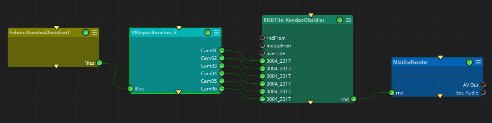
Inputs:
files: The input camera files, in no particular order (as this node will organize them). But please note that the node will not expect a variable number of input cameras. The number of cameras is indicated in the Input Cameras property, and the input files to be processed must be a multiple of it. Otherwise it will not work.
Outputs
Cam01 .. CamXX: One connector per camera, with as many cameras as defined by the Input Cameras property, and organized as defined by the Media Naming property
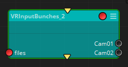
Standard properties
Object Name
Color
Bypass
Lock
Node specific properties
Input Cameras: The number of input cameras used to record the VR scene.
Media Naming: The file naming syntax used to save the recorded files, which is usually associated with a certain VR camera model.
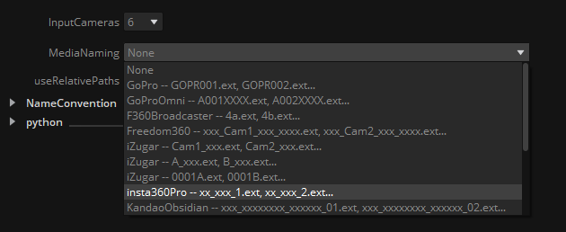
The node will gather all input files and determine the ones that correspond to the camera 1 in the VR rig, camera 2, camera 3, and so on. Then it will place each of them in every ‘CamXX’ output in an ordered fashion, so that the posterior RND template (RND File node) can process every group of VR cameras as a single bunch.
So, if for example we have a folder with 3 batches of VR shots named as:
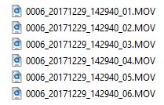
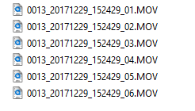
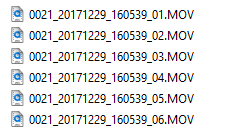
In this case we may apply the naming structure expected as
‘KandaoObsidian - xxx_xxxxxxxx_xxxxxx_01.ext, xxx_xxxxxxxx_xxxxxx_02.ext….’
And select 6 as the number of input cameras for each shot. The node will match all file names against a regular expression, and organize all input files in bunches of 6 elements. Please note that the node will not expect a variable number of input cameras: if 6 is indicated, then the files to be processed must be a multiple of 6. Otherwise it will not work.
In this other example we have 12 input files: there are 3 recorded shots, each one with 4 cameras, and the naming applied is of the kind:
‘ZCam - xxxxxxxx_0000_xxxxxxxxxxxx.ext, xxxxxxxx_0001_xxxxxxxxxxxx.ext….’
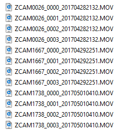
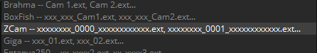
So the node will organize and create 4 bunches of 3 elements, which can be observed in the ‘Script Editor’ panel:
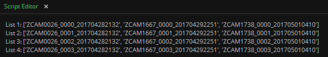
If these lists appear empty when executing the node, please make sure that your naming applied is correct, and the input number of files is a multiple of the expected input cameras’ number.
Use Relative Paths: In some cases the footage is organized by the folder name, rather than with the file naming itself. If so, you can make use of the Use Relative Paths toggle in order to take it into account when organizing the VR Bunches:

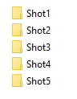
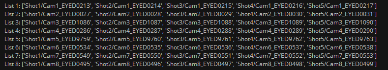
Please note that, due to the variety in VR cameras and different file namings, maybe in your specific case none of the regular expressions available in the pulldown menu will match, or maybe some of them matches despite the camera manufacturer indicated is different.
In such a situation please contact SGO support indicating your file naming and folder structure used, so they can indicate to you how to add your own custom regExp to match your file naming.
Code: This particular node is written in python language. The script itself has been left accessible as an example for Python programmers, or in case you want to customize it to your particular needs.